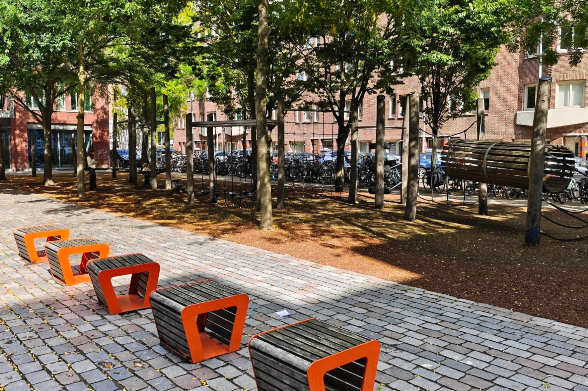

Speeltuin
Het open plein direct naast het terras van Café Fest. Dit is een fijne, beschutte buitenplek op het campusterrein waar je in de zon kunt chillen en even je hoofd leegmaakt na een intensief tentamen.
Reviews
-
"Goeie plek om dronken door te dwalen of je parkour skills te testen"
David
-
"Stel je voor je hebt niks te doen en je hebt gewoon een speeltuin naast je
campus!"
Mika
-
"Vlak bij Café Fest, dus ideaal om na een avondje gezellig drinken nog even avonturen te
beleven."
Rosa